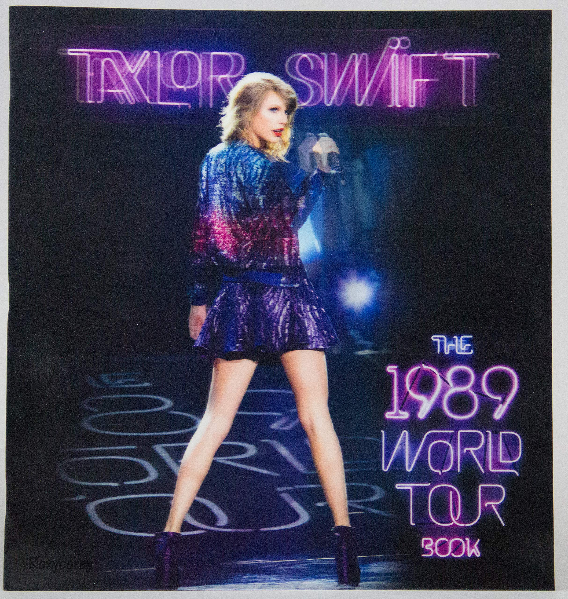

Explorando "1989": A Revolução Pop de Taylor Swift
Lançado em 2014, "1989" é um álbum marcante que marcou a transição de Taylor Swift para o universo pop. Com uma sonoridade enérgica e contagiante, o álbum capturou a essência da década de 1980.

Este álbum apresenta sucessos cativantes como "Shake It Off" e "Blank Space," que se tornaram hinos pop instantâneos. As músicas de "1989" refletem o espírito jovem e a liberdade de expressão.
Taylor Swift exibiu sua habilidade de se reinventar como artista, abraçando uma nova direção musical. O álbum também abordou temas de amor, crescimento pessoal e empoderamento.
O álbum "1989" foi um sucesso estrondoso, recebendo elogios da crítica e ganhando vários prêmios. Taylor Swift mais uma vez provou sua capacidade de se destacar na indústria da música.
Anos depois, "1989" continua a ser lembrado como um divisor de águas em sua carreira, marcando uma fase de reinvenção e consolidação de seu impacto na música pop.